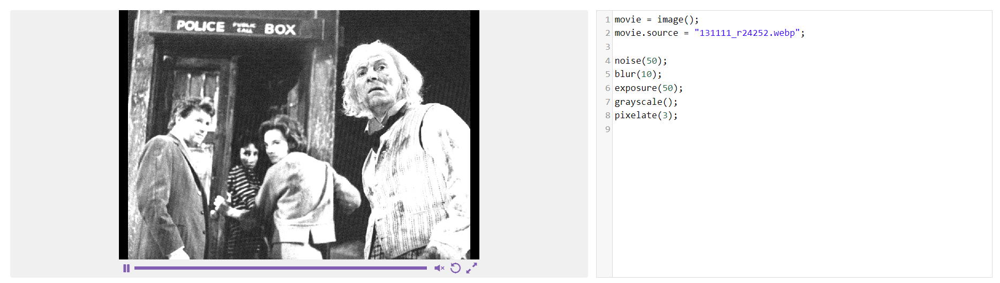
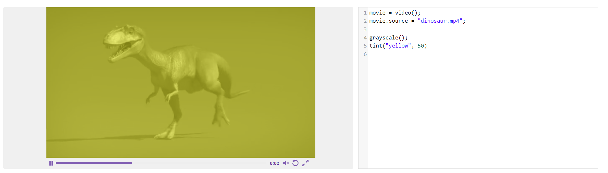
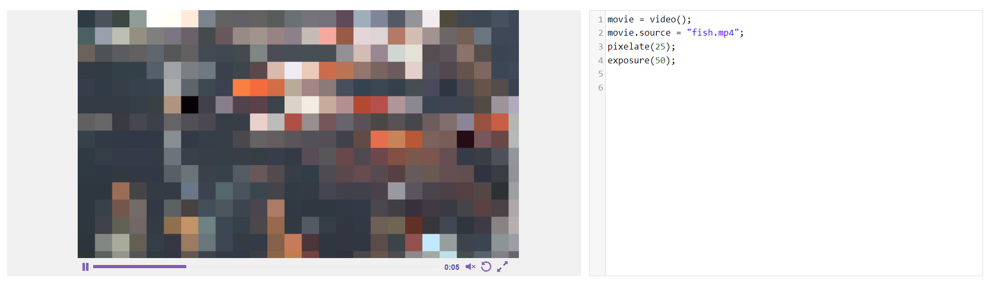
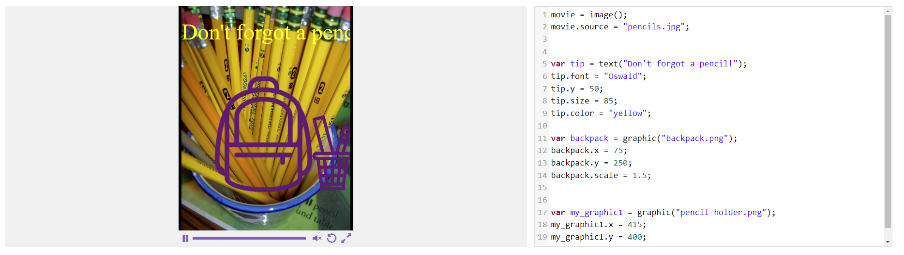

Submitted: --- | Due Date: --- | Grade (Avg.): %
Submitted: Oct 31st, 2023 | Due Date: Oct 31st, 2023 | Grade: %
I did not learn any new "concepts" because I am already familiar with programming. People who are not already familiar with programming would probably still have trouble anwsering this question because these "learning" "programs" (In quotes because Scratch and Vidcode are "web apps" and thus not real programs.) don't teach anything. They might teach a kid what a varible is but that's the most basic thing ever and they probably already know what a varible is in ""coding"". Sure Vidcode teaches javascript varibles and syntax but that's what you would teach first if you were actually trying to teach javascript anyway. All it does is teach how to use their pre-made functions to put text on their pre-made screen window in their pre-made web app. You don't need to buy a subscription to a web app that teaches nothing but how to use their own functions, syntax and varibles and none of the real world useful uses of javascript. Just have them open up notepad and type javascript!
I made a "filter" that makes whatever image you replace the filename with in their image-displaying-in-their-project-screen-window function look like it's on an old TV. Of course though we did that inside of Vidcode with the pre-made functions because writing real javascript from scratch in notepad where you can upload an image then it displays an image with effects you programmed yourself would be to hard for the almost 14 year olds! They can't understand that! They're not advanced enough for ""text-based"" ""coding""!
Vidcode's pre-made functions worked well to make the ""coding"" as simple as Scratch.
I used a frame of an old Doctor Who episode which was already in black in white so next time I wouldn't use a black and white picture to use with my black and white "filter"
Submitted: Nov 3rd, 2023 | Due Date: Nov 1st, 2023 | Grade: %
I already knew all the concepts from prior personal experience.
I re-created the filter that it told me to.
Vidcode's pre-made functions worked well to make the ""coding"" as simple as Scratch.
Nothing, I did the assignment fine.
Submitted: Nov 3rd, 2023 | Due Date: Nov 1st, 2023 | Grade: %
I already knew all the concepts from prior personal experience.
I pixelated a video of some fish to make it look like a quilt.
Vidcode's pre-made functions worked well to make the ""coding"" as simple as Scratch.
I would've put more effects.
Submitted: Nov 3rd, 2023 | Due Date: Nov 3rd, 2023 | Grade: %

I already knew all the concepts from prior personal experience.
I created a meme with Vidcode's pre-made functions
Vidcode's pre-made functions worked well to make the ""coding"" as simple as Scratch.
N/A
Submitted: Nov 3rd, 2023 | Due Date: Nov 3rd, 2023 | Grade: %
I already knew all the concepts from prior personal experience.
I created an image with a graphic and a back-to-school tip on it using the x, y, size, scale, font and color properties of my varibles.
Using properties of my varibles worked well.
N/A